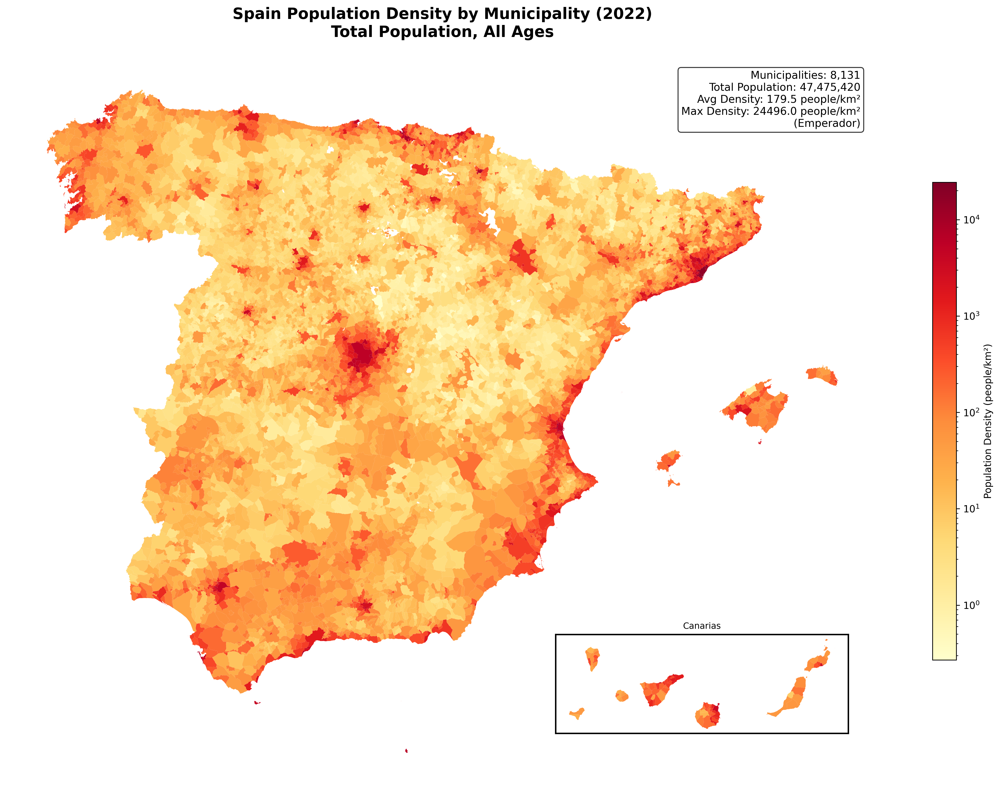
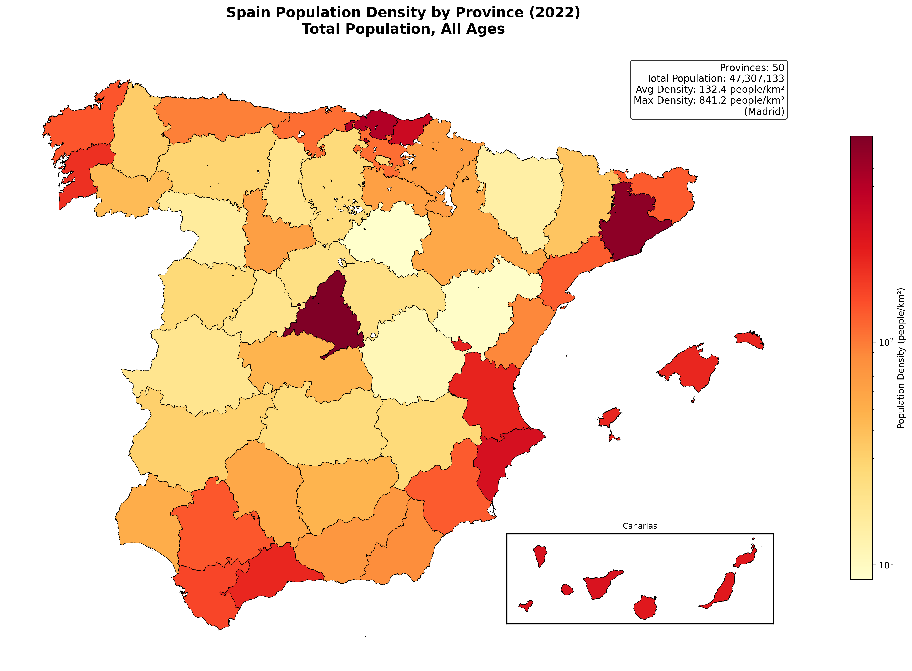
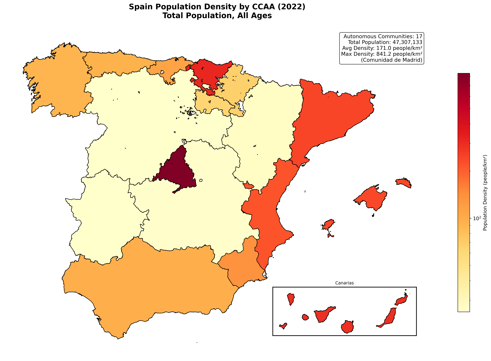
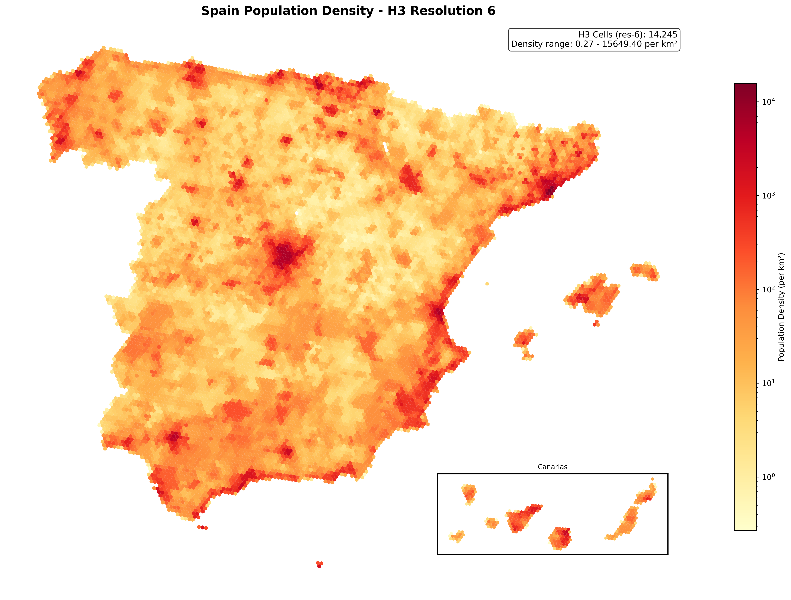

¿Dónde vive realmente España?
Densidad de población en España — por municipio, provincia, comunidad autónoma y una rejilla H3 uniforme.
Esta es la primera de dos fases. La Fase A (aquí) responde dónde vive la gente a partir del censo y el mapa. La Fase B añade las luces nocturnas de NASA Black Marble para validar dónde, dentro de cada municipio, vive realmente. Construido y ejecutado sobre Databricks Free Edition serverless.
La pregunta
El registro de población de España, el Padrón Continuo del INE, se publica por municipio — y los municipios son enormemente desiguales en tamaño. Madrid es un polígono; también lo es una aldea de 12 personas en Soria. Pregunta “¿dónde vive realmente la gente?” con datos municipales en bruto y el mapa miente: te habla de fronteras administrativas, no de personas.
El hallazgo
La mentira es medible. Toma la densidad de población (habitantes por km², calculada sobre una proyección de igual área) de cada municipio español en 2022:
| Medida | hab. / km² |
|---|---|
| Municipio mediano | 13 |
| Municipio medio | 180 |
| La densidad del español medio (ponderada por población) | 2.508 |
La mitad de los municipios de España están por debajo de 13 hab./km² — el interior vacío, la España vaciada. Y sin embargo el español típico vive a unos 2.500 hab./km². La persona típica vive, por tanto, en un entorno unas 187× más denso que el municipio típico (la mediana) — y unas 14× más denso que el municipio medio (180). Un mapa coloreado por municipio te enseña tierra vacía; no te enseña dónde vive el país.
Cuatro vistas de los mismos 47,5 millones de personas
La misma población, dibujada en cuatro unidades distintas. Observa cómo se afina la historia a medida que la unidad espacial se vuelve más honesta.
Por municipio (~8.100 unidades)

Por provincia (50 unidades)

Por comunidad autónoma (17 unidades)

Sobre una rejilla H3 uniforme (hexágonos de igual área)
Las unidades administrativas comparten un defecto: varían en tamaño y forma, así que el color codifica en parte la geografía en lugar de la densidad. Uber H3 las reemplaza por hexágonos de igual área, de modo que el color significa lo mismo en todo el territorio — y el mapa de población y el de densidad pasan a ser el mismo mapa.

Cómo está construido
Un pipeline sobre Databricks — sin servidor GIS, solo Databricks SQL + las funciones espaciales nativas:
- Unir la población del Padrón del INE a los límites municipales del IGN por el código INE de 5 dígitos (8.131 municipios cruzados limpiamente; los extras del conjunto de límites son entidades territoriales no municipales y enclaves en disputa, reconciliados a la unidad).
- Densidad, con honestidad — reproyectar al CRS de igual área ETRS89 / LAEA (EPSG:3035) y dividir población entre km² reales. La densidad no es aditiva, así que se recalcula (no se promedia) en cada nivel al disolver hacia provincia y CCAA.
- Asignación H3 — rellenar (polyfill) cada municipio a celdas res-9 y repartir su población entre ellas, luego agregar a res-6 para la vista nacional. La población se conserva de forma exacta: los 3 municipios que el polyfill deja sin celda se rescatan asignándolos a la celda H3 de su centroide, de modo que no se pierde ni una persona.
-- Asignar la población municipal a celdas H3 (h3_* nativo de Databricks),
-- simplificando la geometría primero para que el polyfill sea barato sobre fronteras detalladas.
SELECT h3_toparent(cell, 6) AS h3_cell,
SUM(poblacion / num_cells) AS poblacion
FROM (
SELECT codigo_municipio, poblacion,
explode(h3_polyfillash3string(ST_AsWKT(ST_Simplify(geometry, 0.001)), 9)) AS cell,
size(h3_polyfillash3string(ST_AsWKT(ST_Simplify(geometry, 0.001)), 9)) AS num_cells
FROM municipios_geo
)
GROUP BY h3_toparent(cell, 6)Qué viene — Fase B
El mapa H3 todavía asume que la población se reparte de forma uniforme dentro de cada municipio. No es así. La Fase B incorpora las luces nocturnas de NASA Black Marble (VIIRS) para reasignar la población según el brillo de cada celda — convirtiendo “donde el registro dice que está la gente” en “donde las luces demuestran que está”. Ese es el validador, y el hilo publicado, todavía por llegar.